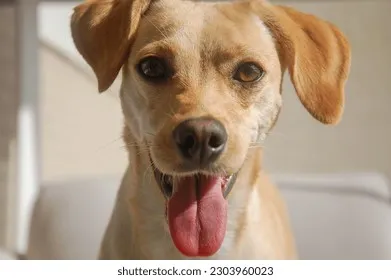
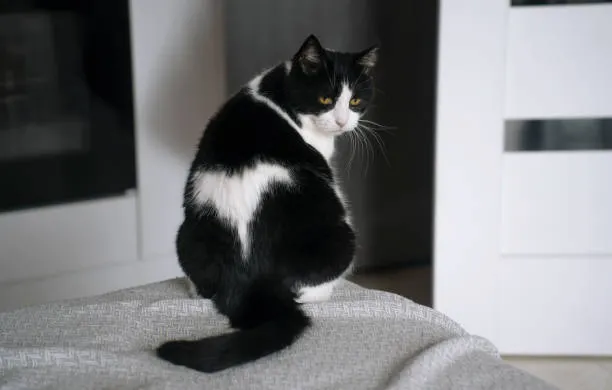
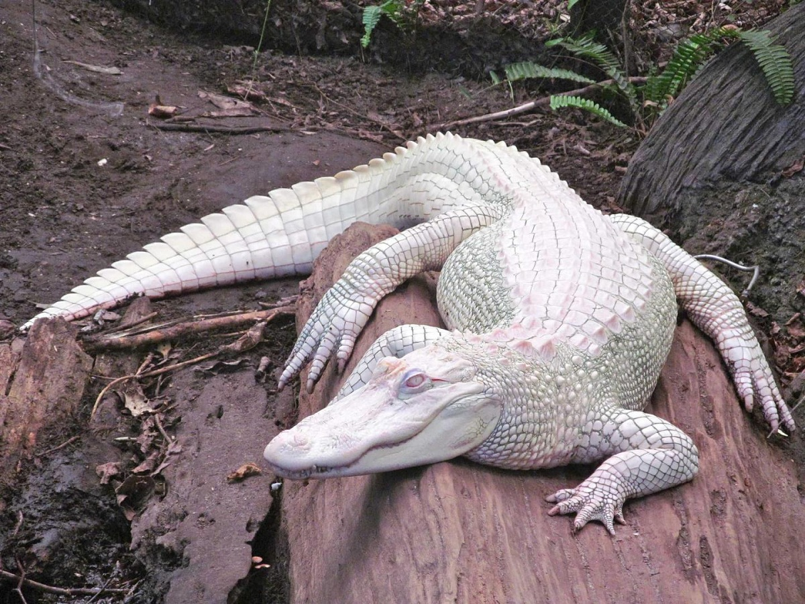

Maxiwell es un perro juguetón que ama dormir y perseguir pelotas.

Maxiwell es un perro juguetón que ama dormir y perseguir pelotas.

Muchito es un gato curioso que siempre explora todos los rincones.

Sandor es un perico australiano. tranquila que disfruta del sol y la calma.

Muy activo y divertido, le encanta jugar todo el día.

Amigable y cariñoso, siempre busca compañía.

Pequeño explorador con mucha energía.